Dành cho Hành chính tổng hợp (lập lệnh, nhập chi phí), trạm cân, kế toán (duyệt, chi) và Ban Giám đốc. Một chuyến xe đi từ lệnh điều động → in lệnh và biên bản bàn giao → trạm cân chọn lệnh khi cân xuất → xe về nhập km và chi phí → gom thành đề nghị thanh toán cho tài xế.
Máy tính: huyanhrubber.vn → menu VẬN TẢI4 mục: Lệnh điều động · Sổ chi phí đội xe · Đội xe · Tài xếẢnh chụp từ hệ thống 10/11/2026
1 · Tổng quan và ai làm gì
Một chuyến xe nhìn từ trên xuống
1Lập lệnhtừ đơn hàng bán hoặc tự nhập
2Inlệnh điều động, biên bản bàn giao
3Điều xeđổi trạng thái Đã điều xe
4Trạm câncân xuất chọn lệnh, KL về lệnh
5Xe vềnhập ngày về, km, khoản chi
6Duyệtkế toán khoá chi phí chuyến
7Thanh toánđề nghị thanh toán cho tài xế
Hành chính tổng hợpLập lệnh, in, điều xe, cập nhật trạng thái. Khi xe về nhập hành trình, km, từng khoản chi kèm hoá đơn, ghi tạm ứng, lập đề nghị thanh toán.
Trạm cânKhi cân xuất trên app cân chọn đúng lệnh điều động. Khối lượng thật tự ghi về lệnh và đơn hàng bán.
Kế toánSoát khoản chi và chứng từ, bấm Duyệt và khoá, duyệt đề nghị thanh toán, đánh dấu đã chi.
Ban Giám đốcXem sổ chi phí theo tài xế, theo xe, theo loại chi; ký duyệt khi cần.
Vào được menu Vận tải: Ban Giám đốc, Hành chính tổng hợp, QC, Logistics và admin. Duyệt và chi trên đề nghị thanh toán chỉ kế toán, Ban Giám đốc, admin.
2 · Danh sách lệnh điều động
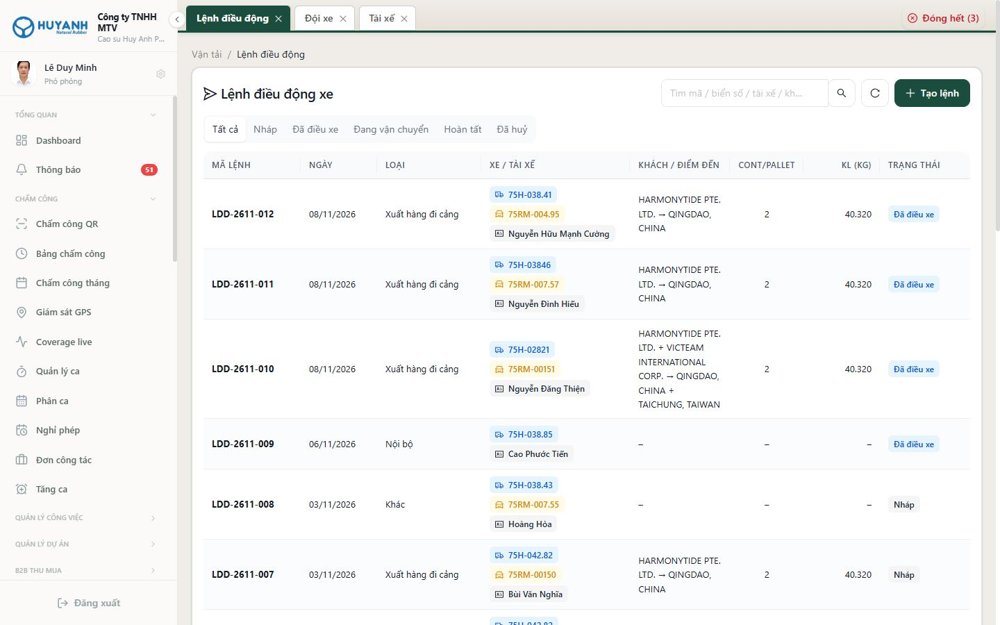
Vận tải → Lệnh điều động
Ô tìm theo mã lệnh, biển số, tài xế, khách. Thanh chọn trạng thái để lọc.
Cột: Mã lệnh (LDD-năm tháng-số thứ tự), Ngày, Loại chuyến, Xe / Tài xế, Khách / Điểm đến, số Cont hay Pallet, KL kế hoạch, Trạng thái.
Chạm một dòng để mở chi tiết. Nút Tạo lệnh điều động ở góc phải.
Trạng thái lệnh
Nháp→Đã điều xe→Đang đi→Hoàn tất(Đã huỷ ở bất kỳ bước nào; lệnh huỷ có thể trả về Nháp)
Lệnh Hoàn tất hoặc Đã huỷ không còn hiện trên app cân. Nếu trạm cân báo "không thấy lệnh", kiểm tra trạng thái trước.
3 · Tạo lệnh điều động
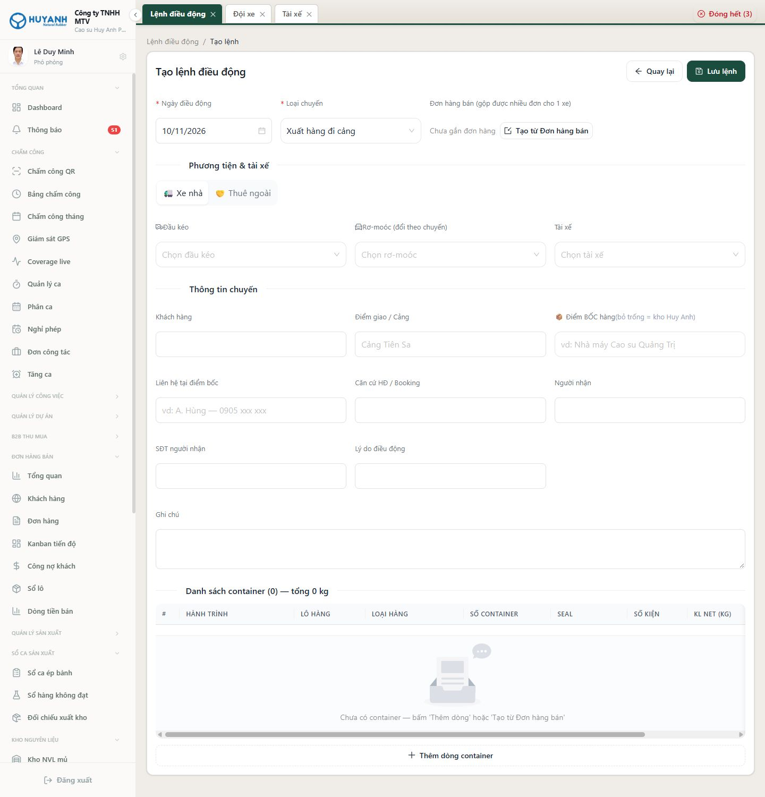
Lệnh điều động → Tạo lệnh điều động
Ngày điều động và Loại chuyến: Xuất hàng đi cảng, Hàng thương mại, Đi lấy mủ, Đi Lào, Nội bộ, Khác. Loại chuyến quyết định bảng hàng bên dưới là container hay dòng tự do.
Phương tiện và tài xế: chọn Đầu kéo, máy tự điền tài xế mặc định của xe đó. Chọn Rơ-moóc theo chuyến (moóc đổi liên tục nên không gắn cứng). Xe thuê ngoài thì bật thuê ngoài, gõ nhà xe, tên tài xế, số điện thoại, cước thuê.
Thông tin chuyến: khách hàng, điểm giao hoặc cảng, điểm bốc hàng (bỏ trống là kho Huy Anh), liên hệ tại điểm bốc, căn cứ hợp đồng hoặc booking, người nhận, lý do, ghi chú.
Hàng trên xe: bấm Tạo từ Đơn hàng bán → chọn đơn → tick đúng container và seal đi chuyến này (có nút chọn cả lô). Một xe chở container của nhiều đơn, nhiều khách thì gắn thêm đơn, mỗi đơn là một thẻ. Chuyến không có container thì Thêm dòng container và gõ tay.
Bấm Lưu lệnh. Lệnh mới ở trạng thái Nháp.
Chuyến đi lấy mủ
Loại "Đi lấy mủ" có thêm ô loại mủ dự kiến, mã lô dự kiến, số pallet nhựa và sắt mang đi. App cân điền sẵn các số này khi chọn lệnh, và chi tiết lệnh hiện bảng đối chiếu bốn lần cân (hai ở Tân Lâm, hai ở Phong Điền).
Mẹo
Đầu kéo gắn tài xế cố định ở danh mục Đội xe, nên chọn xe là xong phần tài xế.
Mỗi dòng là một container với seal riêng. Một xe hai container thì hai dòng.
Lệnh đã Hoàn tất không sửa được bảng hàng. Cần sửa thì đổi về Đã điều xe trước.
4 · Chi tiết lệnh, đổi trạng thái, in
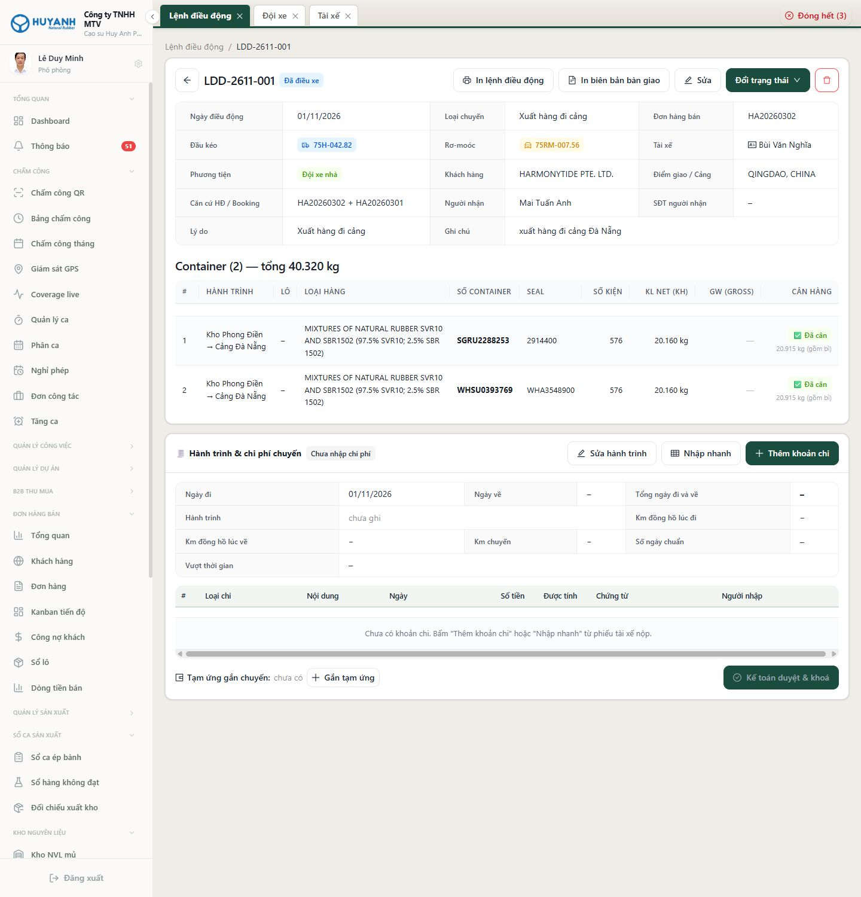
Chi tiết lệnh LDD-2611-001: thông tin, container đã cân, khối Hành trình và chi phí chuyến
Hàng nút trên cùng: In lệnh điều động, In biên bản bàn giao, Sửa, Đổi trạng thái, thùng rác để xoá lệnh nháp. Lệnh đi cảng có thêm Đánh dấu đã cân khi trạm cân không chọn lệnh được.
Bảng container: số container, seal, số kiện, KL net kế hoạch, GW, cột Cân hàng hiện "Đã cân" kèm số cân thật khi trạm cân đã cân.
Phía dưới là khối Hành trình và chi phí chuyến (mục 7).
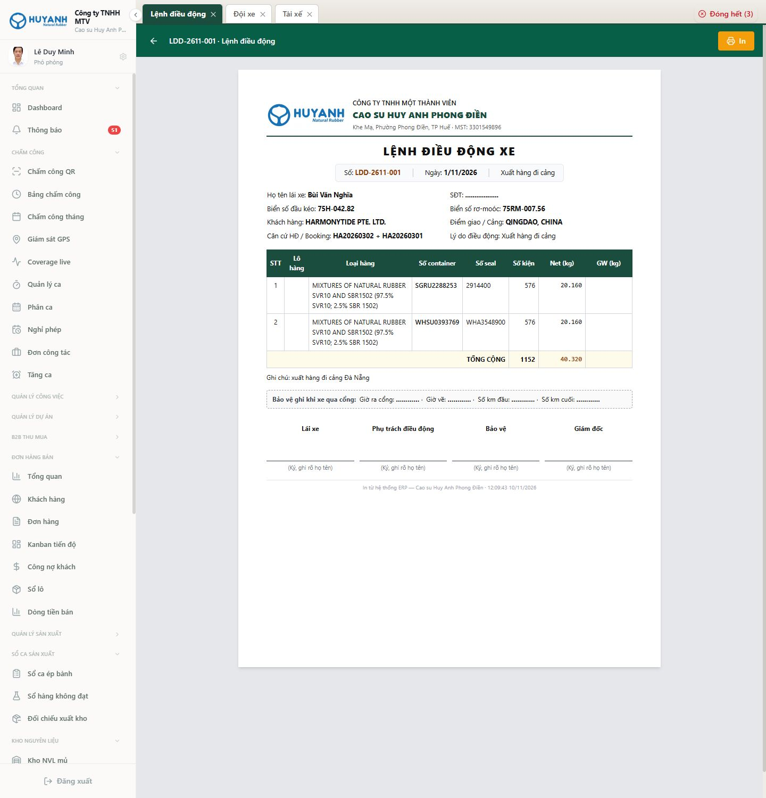
Bản in A4 Lệnh điều động xe: số lệnh, lái xe, biển số, khách, cảng, bảng container, ô bảo vệ ghi giờ và km, bốn chữ ký
Bản in Biên bản bàn giao vận chuyển dùng cùng số liệu, thêm cột khách hàng khi một xe chở hàng của hai khách trở lên. Bấm In ở góc phải, trình duyệt chỉ in tờ phiếu.
5 · Nối với trạm cân và đơn hàng bán
Lập lệnh và đổi sang Đã điều xe. Lệnh xuất hiện trong ô "Lệnh điều động" của app cân Phong Điền khi cân xuất.
Trạm cân chọn lệnh, không chọn từng container. Một lệnh là một xe, cân xong lần hai thì khối lượng chia về các dòng theo kế hoạch, seal thật ghi về lệnh, phiếu cân gắn vào lệnh.
Đơn hàng bán tự cập nhật giao hàng theo container đã cân. Sổ lô và công nợ dùng ngày điều động làm mốc.
Xe giao xong, đổi lệnh sang Hoàn tất.
Xe hai container mà trạm cân làm hai phiếu nối nhau thì chỉ gắn được một phiếu vào lệnh. Trường hợp này khối lượng từng dòng có thể lệch, cần đối chiếu tay. Việc sửa app cân để xử lý đúng hai phiếu đang để sau.
6 · Đội xe và tài xế
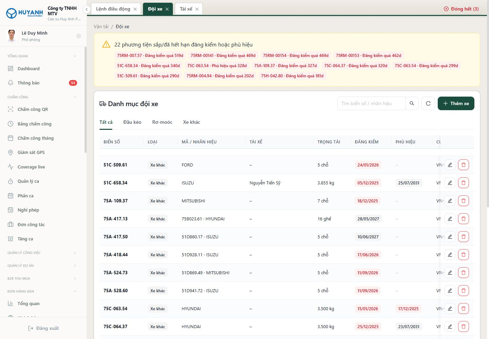
Vận tải → Đội xe: đầu kéo, rơ-moóc, xe khác
Mỗi xe có biển số, loại (đầu kéo, rơ-moóc, xe khác), mã nội bộ, nhãn hiệu, trọng tải, số khung, số máy, hạn đăng kiểm, hạn phù hiệu, cửa khẩu, tài xế mặc định.
Xe sắp hết hạn đăng kiểm hoặc phù hiệu được tô màu để nhắc gia hạn.
Thêm xe để khai xe mới; sửa bằng cách chạm dòng.
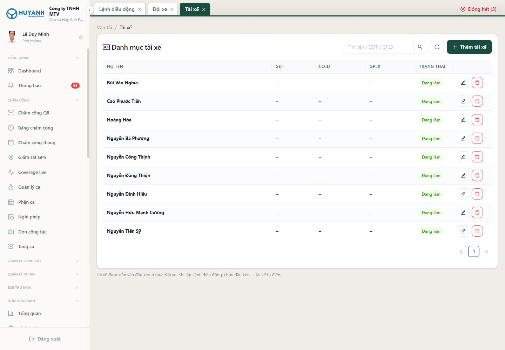
Vận tải → Tài xế
Họ tên, số điện thoại, CCCD, số và hạng giấy phép lái xe, ngày sinh, địa chỉ, trạng thái đang làm việc. Các thông tin này in lên lệnh điều động.
Tài xế nghỉ thì tắt "Đang làm việc", không xoá, để lệnh cũ vẫn còn tên.
7 · Chi phí chuyến trên lệnh khối "Hành trình và chi phí chuyến" trong chi tiết lệnh
Xe về, Hành chính tổng hợp mở lệnh rồi nhập ba thứ: hành trình và km, từng khoản chi theo phiếu tài xế nộp, tạm ứng đã đưa. Kế toán xem xong bấm duyệt và khoá.
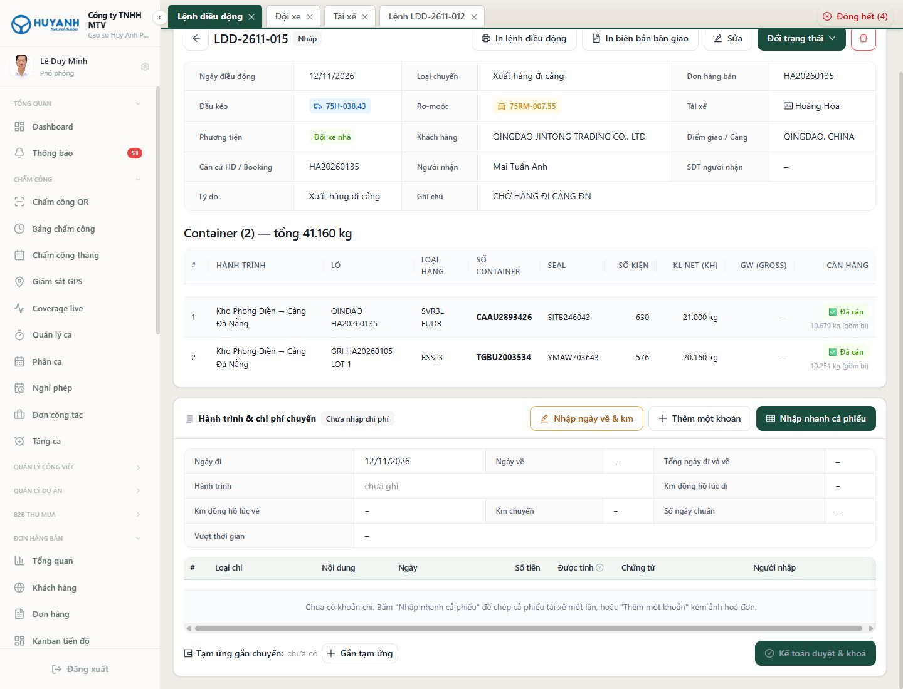
Ba nút nhập: Nhập ngày về & km (tô vàng khi chuyến chưa có ngày về), Thêm một khoản (một khoản kèm ảnh), Nhập nhanh cả phiếu (chép cả phiếu tài xế một lần — đường chính).
Nhập ngày về và km
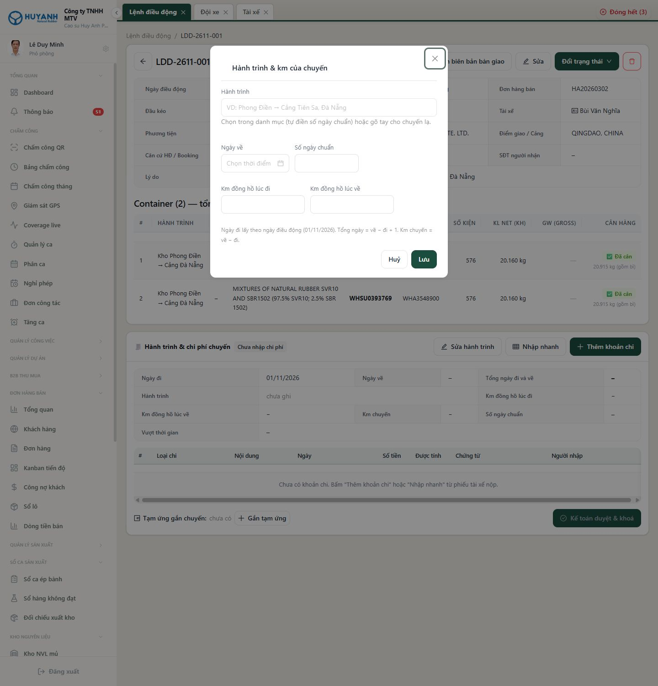
Khi chuyến chưa có ngày về, nút đổi thành Nhập ngày về & km tô vàng để nhắc — thiếu nó thì không tính được km và số ngày. Nhập xong nút trở lại Sửa hành trình.
Chọn hành trình trong danh mục, máy tự điền số ngày chuẩn; chuyến lạ thì gõ tay.
Ngày về, km đồng hồ lúc đi, km đồng hồ lúc về. Máy tính tổng ngày = về − đi + 1, km chuyến = về − đi, vượt = tổng ngày − số ngày chuẩn.
Nhập nhanh cả phiếu đường chính khi tài xế nộp một tờ phiếu chi
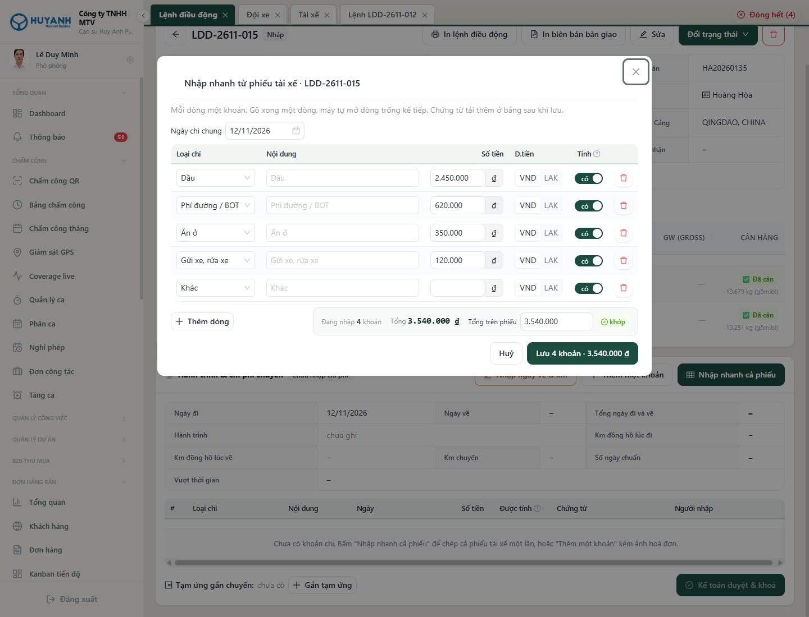
Lưới Nhập nhanh: tổng tiền chạy theo từng dòng, ô "Tổng trên phiếu" báo khớp hay lệch.
Lưới mở sẵn các loại chi thường gặp (dầu, phí đường, ăn ở, gửi xe). Gõ xong một dòng, máy tự mở dòng trống kế tiếp như bảng tính; thiếu loại nào bấm Thêm dòng.
Nội dung gõ tay hoặc bấm chọn trong gợi ý theo loại chi.
Ngày chi chung ở trên áp cho cả phiếu, mặc định lấy ngày về; không phải gõ từng dòng.
Số tiền, đồng tiền VND hoặc LAK mỗi dòng. Có dòng LAK thì nhập một tỷ giá chung.
Công tắc Tính: bật là được tính; tắt là chưa thông qua, dòng hiện thêm ô ghi vì sao.
Tổng tiền sống dưới lưới cộng ngay khi gõ. Gõ Tổng trên phiếu (số cuối trên tờ phiếu tài xế) để đối chiếu: máy báo khớp hoặc lệch bao nhiêu, dư hay thiếu — bắt lỗi chép sai tại chỗ.
Nút lưu hiện luôn tổng: Lưu 4 khoản · 3.540.000 ₫. Chứng từ tải thêm ở bảng sau khi lưu.
Thêm một khoản một khoản kèm ảnh hoá đơn
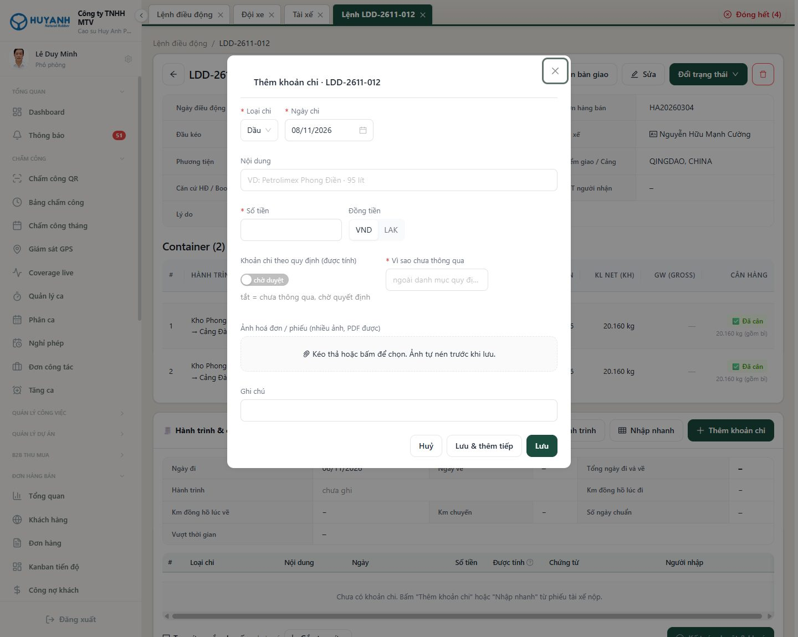
Dùng khi chỉ có một khoản hoặc cần đính ảnh ngay. Công tắc đang tắt (chờ duyệt) nên hiện thêm ô "Vì sao chưa thông qua".
Loại chi và Ngày chi (mặc định ngày điều động). Nội dung ngắn gọn, ví dụ "Petrolimex Phong Điền 95 lít".
Số tiền và đồng tiền VND hoặc LAK. Chọn LAK thì nhập tỷ giá 1 LAK bằng bao nhiêu đồng, máy điền sẵn tỷ giá gần nhất và tự quy đổi.
Khoản chi theo quy định (được tính): bật khi nằm trong danh mục chi phí công ty đã quy định, máy tính vào chuyến và vào đề nghị thanh toán. Tắt khi chưa được thông qua (ngoài quy định, chưa có quyết định): ghi vì sao, khoản nằm ở cột "Chưa thông qua" chờ Ban Giám đốc hoặc kế toán quyết, đồng ý thì bật lại. Tắt không có nghĩa là tài xế phải chịu.
Ảnh hoá đơn: kéo thả hoặc chọn nhiều ảnh, nhận cả PDF, ảnh tự nén. Không bắt buộc nhưng sổ sẽ đếm khoản thiếu chứng từ.
Lưu hoặc Lưu và thêm tiếp để nhập khoản kế.
Bảng khoản chi, tạm ứng gắn chuyến, duyệt và khoá
Mỗi khoản một dòng: loại, nội dung, ngày, số tiền (LAK hiện kèm số quy đổi), công tắc Được tính (tắt là chưa thông qua, chờ quyết định), ảnh chứng từ (chạm xem to, nút tải thêm), người nhập. Khoản được tính mà chưa có ảnh gắn nhãn "thiếu CT".
Cước thuê xe ngoài đã khai trên lệnh hiện thành một dòng màu tím, không nhập lại.
Bốn ô tổng: Tổng chi chuyến (được tính + chưa thông qua, quy đổi VNĐ), Chi được tính, Chưa thông qua, Chứng từ đủ hay thiếu.
Gắn tạm ứng: ghi tạm ứng đã đưa cho tài xế trước chuyến. Dòng dưới hiện còn lại sau chuyến.
Kế toán duyệt và khoá: sau khi khoá không sửa hay xoá khoản chi và chứng từ được nữa. Muốn sửa bấm Mở lại.
Chuyến đã gom vào đề nghị thanh toán cũng bị khoá sửa khoản chi. Muốn sửa phải bỏ chuyến khỏi phiếu nháp trước.
8 · Sổ chi phí đội xe Vận tải → Sổ chi phí đội xe
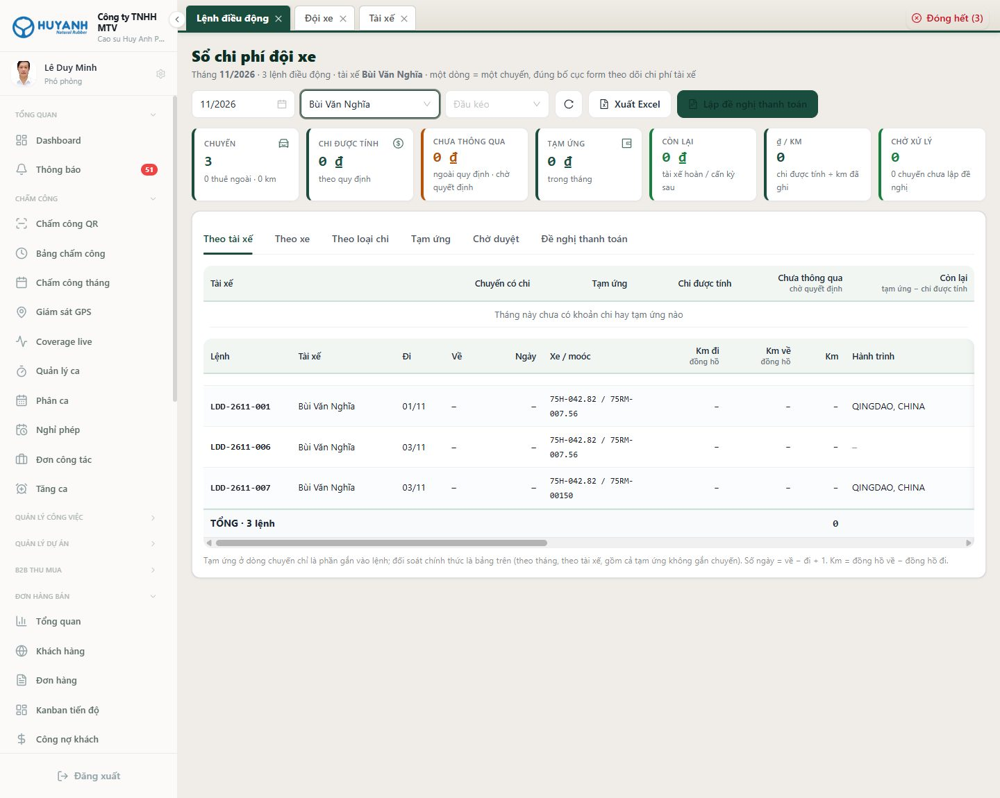
Lọc tháng 11/2026, tài xế Bùi Văn Nghĩa. Bảng trên là đối soát theo tài xế, bảng dưới mỗi dòng một chuyến theo đúng bố cục form theo dõi chi phí tài xế
Bộ lọc: tháng, tài xế, đầu kéo. Nút tải lại, Xuất Excel ra file đúng 26 cột của form, một sheet mỗi tài xế. Nút Lập đề nghị thanh toán sáng khi đã chọn tài xế.
Bảy ô số: chuyến, chi được tính, chưa thông qua, tạm ứng, còn lại, đồng trên km, chờ xử lý.
Theo tài xế: bảng đối soát tạm ứng − chi được tính = còn lại (dương là tài xế hoàn, âm là chi thêm), chạm tên để lọc; bảng chuyến bên dưới có ngày đi về, xe, km, hành trình, ngày chuẩn, vượt, nội dung, tạm ứng, chi được tính, chưa thông qua, trạng thái và mã đề nghị thanh toán.
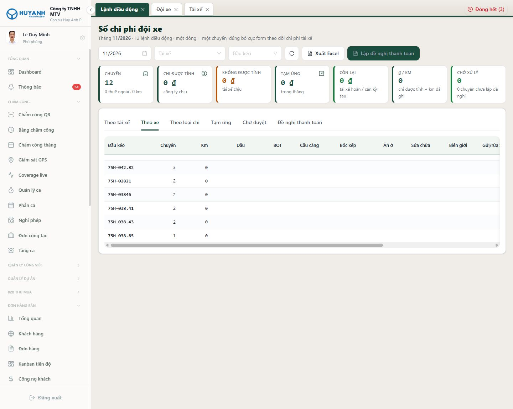
Theo xe: mỗi đầu kéo một dòng, chi theo từng loại, tổng quy đổi, đồng trên km
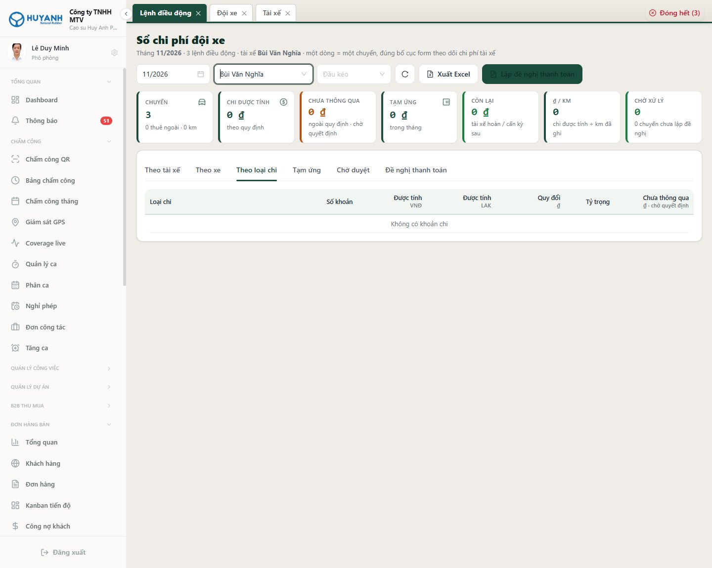
Theo loại chi: số khoản, VND, LAK, quy đổi, tỷ trọng
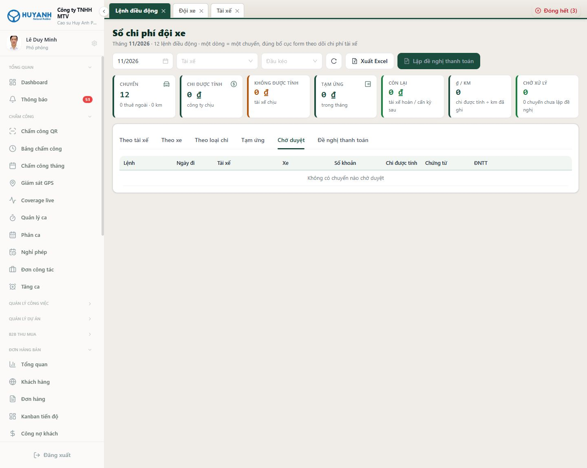
Chờ duyệt: chuyến đã có khoản chi nhưng kế toán chưa khoá, nút Mở lệnh để duyệt
9 · Tạm ứng tài xế
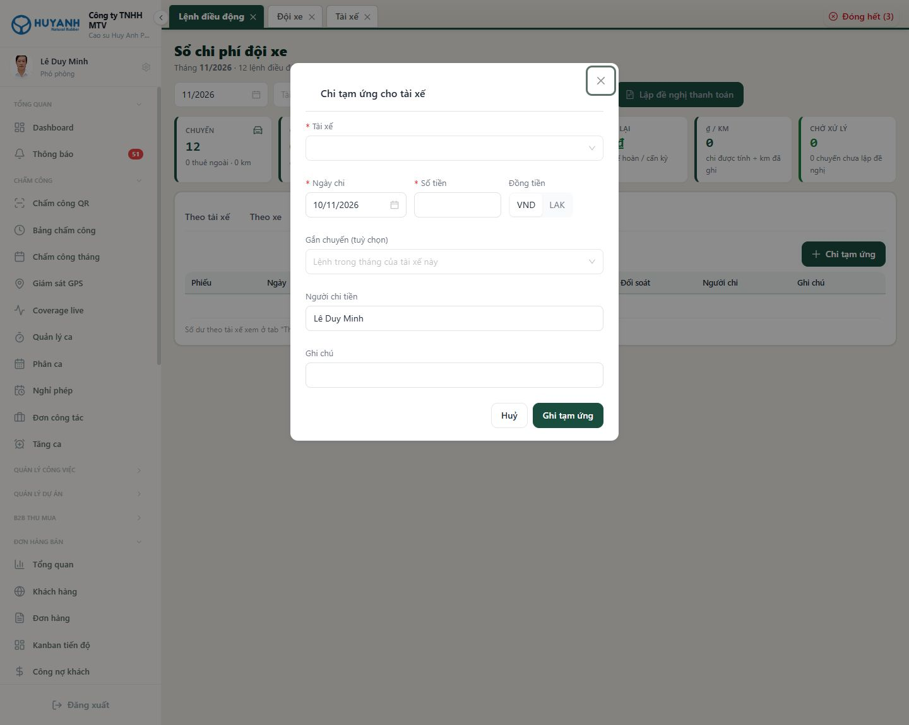
Tab Tạm ứng → Chi tạm ứng
Chọn tài xế, ngày chi, số tiền, VND hoặc LAK (LAK cần tỷ giá để sau này khấu trừ), gắn chuyến nếu biết, người chi tiền, ghi chú. Mã phiếu TU-năm tháng-số tự sinh.
Tab Tạm ứng liệt kê phiếu trong tháng, cột Đối soát cho biết phiếu đã vào đề nghị thanh toán chưa. Phiếu chưa đối soát mới xoá được.
Số dư từng tài xế xem ở tab Theo tài xế. Tạm ứng chưa đối soát được mang sang kỳ sau cho đến khi khấu trừ.
10 · Đề nghị thanh toán chi phí xe
Cùng mẫu và cùng luồng với đề nghị thanh toán mủ. Một phiếu là một tài xế trong một kỳ: các chuyến có chi phí thành dòng cộng, tạm ứng chưa đối soát thành dòng trừ, tổng là số thực chi cho tài xế.
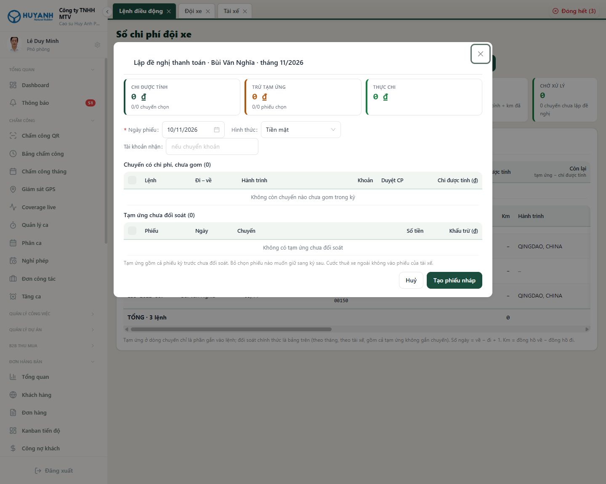
Lập đề nghị thanh toán: tick chuyến và tạm ứng, ba ô số tính ngay chi được tính, trừ tạm ứng, thực chi
Ở Sổ chi phí chọn tháng và tài xế → bấm Lập đề nghị thanh toán.
Tick các chuyến có chi phí chưa gom và các tạm ứng chưa đối soát (gồm cả phiếu kỳ trước). Bỏ tick phiếu tạm ứng nào muốn giữ sang kỳ sau. Chọn ngày phiếu, hình thức nhận tiền, tài khoản nếu chuyển khoản.
Bấm Tạo phiếu nháp. Máy sinh mã TTDX-năm tháng-số và mở trang chi tiết phiếu.
Ở trang phiếu: sửa thông tin, thêm khoản tay, bỏ dòng (chuyến hay tạm ứng được nhả ra), xem ba ô tổng. Xong bấm Gửi duyệt.
Kế toán hoặc Ban Giám đốc bấm Duyệt: chi phí các chuyến trong phiếu bị khoá. Chi tiền xong bấm Đánh dấu đã chi.
Cần sửa thì Trả về nháp. Lập nhầm thì Huỷ, chuyến và tạm ứng được nhả để gom phiếu khác.
In phiếu: tờ A4 "Đề nghị thanh toán" như bên mủ, có kính gửi, người đề nghị, lý do, ô tick hình thức nhận tiền, bảng STT, nội dung, ĐVT, SL, đơn giá, thành tiền, ghi chú, số tiền bằng chữ, ba chữ ký.
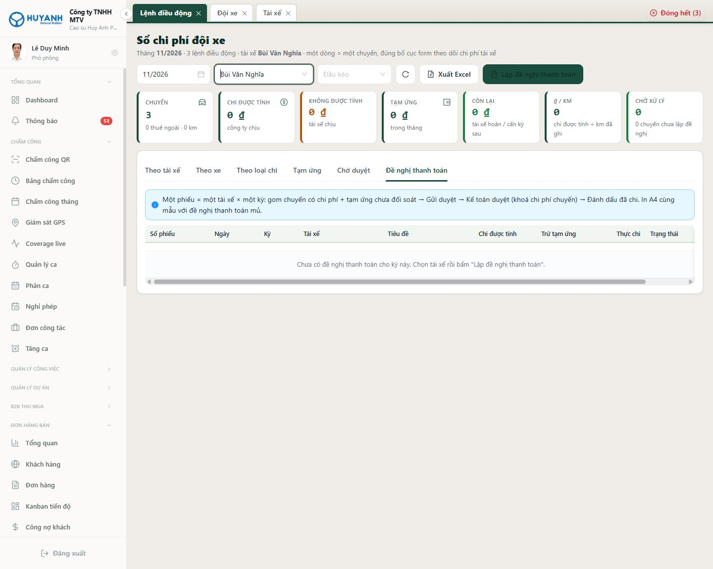
Tab Đề nghị thanh toán liệt kê phiếu trong kỳ: số phiếu, ngày, tài xế, chi được tính, trừ tạm ứng, thực chi, trạng thái
Trạng thái phiếu
Nháp→Đã gửi→Đã duyệt→Đã chi(Đã huỷ từ Nháp, Đã gửi hoặc Đã duyệt)
Dòng chuyến là phần tài xế được thanh toán, quy đổi VND, không gồm cước thuê xe ngoài (tiền đó trả cho nhà xe).
Tạm ứng lớn hơn chi phí thì phiếu ghi "Tài xế nộp lại"; muốn giữ tạm ứng cho kỳ sau, bỏ bớt dòng tạm ứng.
Mỗi chuyến, mỗi tạm ứng chỉ nằm trong một phiếu còn hiệu lực.
11 · Quy ước nhanh và lỗi thường gặp
Một lệnh = một xe = một chuyến. Một xe chở container của nhiều đơn, nhiều khách vẫn một lệnh.
Km đi và km về là số đồng hồ. Tổng ngày = về − đi + 1. Vượt = tổng ngày − số ngày chuẩn, chỉ để theo dõi, chưa tính tiền.
LAK ghi theo đồng tiền gốc, mỗi khoản có tỷ giá riêng. Sổ tách cột LAK và VND như form, ô tổng có số quy đổi.
Chứng từ không bắt buộc nhưng sổ đếm khoản được tính thiếu chứng từ để kế toán soát.
Được tính = khoản chi trong danh mục quy định. Chưa thông qua = ngoài quy định hoặc chưa có quyết định, chờ Ban Giám đốc hoặc kế toán; không vào đề nghị thanh toán cho tới khi bật lại. Không phải tài xế chịu.
Cước thuê xe ngoài khai một lần trên lệnh, không nhập vào khoản chi, không vào đề nghị thanh toán của tài xế.
Tạm ứng là sổ riêng, chưa nối quỹ tiền mặt. Lương chuyến chưa tính trong hệ thống.
Tình huống
Làm gì
App cân không thấy lệnh
Lệnh đang Hoàn tất, Đã huỷ hoặc còn Nháp. Đổi về Đã điều xe.
Nút "Lập đề nghị thanh toán" mờ
Chưa chọn tài xế ở bộ lọc. Chọn tài xế rồi bấm lại.
"Không có chuyến có chi phí hay tạm ứng nào chưa gom"
Chuyến trong kỳ chưa có khoản chi, hoặc đã nằm trong phiếu khác. Xem cột trạng thái ở tab Theo tài xế.
"Lệnh đã duyệt chi phí (khoá)"
Kế toán đã khoá. Bấm Mở lại trên lệnh, hoặc nếu chuyến đang trong đề nghị thanh toán thì bỏ chuyến khỏi phiếu nháp.
Tài xế có khoản chi lạ, chưa biết công ty có chấp nhận không
Vẫn nhập, tắt Được tính và ghi vì sao. Khoản hiện ở cột Chưa thông qua, không vào đề nghị thanh toán. Khi có quyết định đồng ý, bật lại Được tính.
"Khoản chi bằng LAK cần tỷ giá"
Nhập ô 1 LAK bằng bao nhiêu đồng. Tạm ứng LAK cũng cần tỷ giá mới khấu trừ được.
Nút Duyệt hoặc Đánh dấu đã chi mờ
Chỉ kế toán, Ban Giám đốc, admin bấm được.
Khoản chi thuộc chuyến xe thuê ngoài
Nhập như thường, nhưng tiền trả cho nhà xe đi luồng riêng, không lập đề nghị thanh toán tài xế.